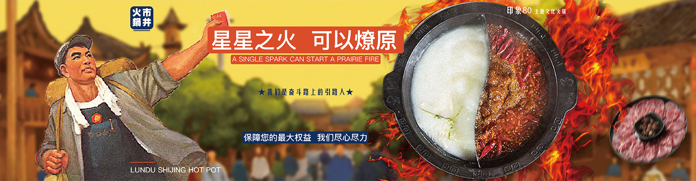
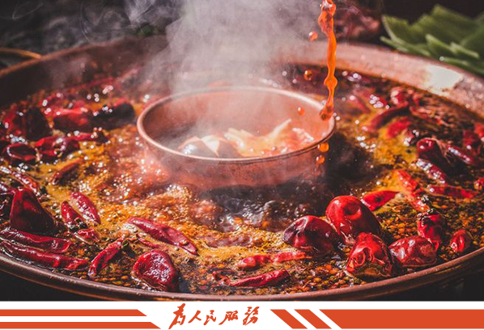
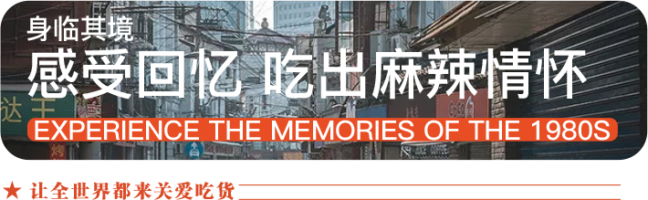
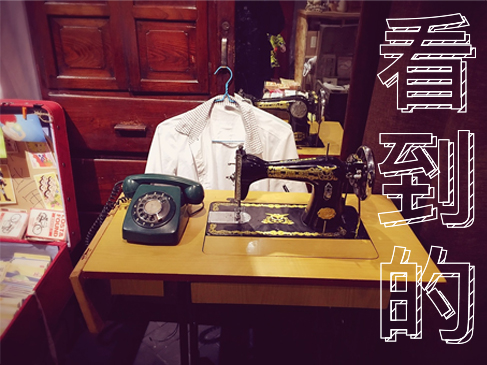
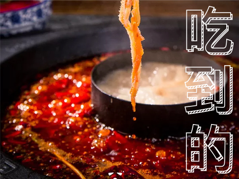
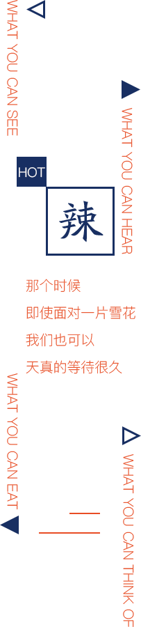
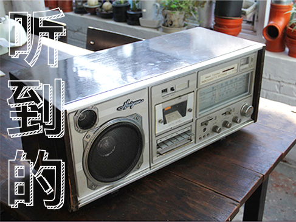
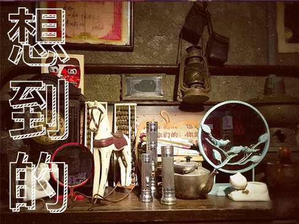

网站首页
关于我们
特色菜品
新闻资讯
合作加盟
联系我们
加盟热线：400-8528-908

嬉闹市井人
印象80主题文化火锅
HOT POT IN 1980S
伦
度品牌主打成都精品市井火锅，秉承着传播符合现代人自在生活的精神理念，将正宗成都老火锅融入时代北京中，还原80年代市井社会的麻辣滋味，在线市井的人文生活；老味道 与复古环境的交融，让消费者在用餐体验中找回熟悉的记忆，引发情感共鸣，穿越回那个简单的火锅时代。
岁月轮回
稀释不了文化传承
时间飞度
流逝不了代代信仰
尽享自由 放飞梦想
用火锅的味道 增进你我的感情
传播符合现代人惬意悠闲生活的
精神理念
LUN DU
SHIJING HUOGUO


LUN DU
SHIJING HUOGUO
从前
车马很慢
一生只钟爱
伦度火锅

最具特色的人文、景观火锅文化展览馆。通过特殊时期的老物件、各类文化挂件、餐具、服装、装修场景，重现市井火锅的人文气息。

追求还原醇香厚实的老味道，纯手工炒制底料工艺，配方严格量化，炒制出时代记忆中麻辣勾人的复合传统香味儿~


复古的收音机、老式磁带、黑白色彩的影音视频，祭出一大波“回忆杀”；追溯浓郁的年代文化。

窥一缕过往的风采，过往年代艰苦、节俭、勤劳、奋斗的岁月历历在目。感受老一辈不屈不挠，乐观向上的生活态度。
嬉闹市井人~
印象80主题文化火锅
HOT POT IN 1980S
伦
度品牌主打成都精品市井火锅，秉承着传播符合现代人自在生活的精神理念，将正宗成都老火锅融入时代北京中，还原80年代市井社会的麻辣滋味，在线市井的人文生活；老味道 与复古环境的交融，让消费者在用餐体验中找回熟悉的记忆，引发情感共鸣，穿越回那个简单的火锅时代。
岁月轮回
稀释不了文化传承
时间飞度
流逝不了代代信仰
尽享自由 放飞梦想
用火锅的味道
增进你我的感情
传播符合现代人惬意悠闲生活的精神理念
最具特色的人文、景观火锅文化展览馆。通过特殊时期的老物件、各类文化挂件、餐具、服装、装修场景，重现市井火锅的人文气息。
复古的收音机、老式磁带、黑白色彩的影音视频，祭出一大波“回忆杀”；追溯浓郁的年代文化。
追求还原醇香厚实的老味道，纯手工炒制底料工艺，配方严格量化，炒制出时代记忆中麻辣勾人的复合传统香味儿~
窥一缕过往的风采，过往年代艰苦、节俭、勤劳、奋斗的岁月历历在目。感受老一辈不屈不挠，乐观向上的生活态度。